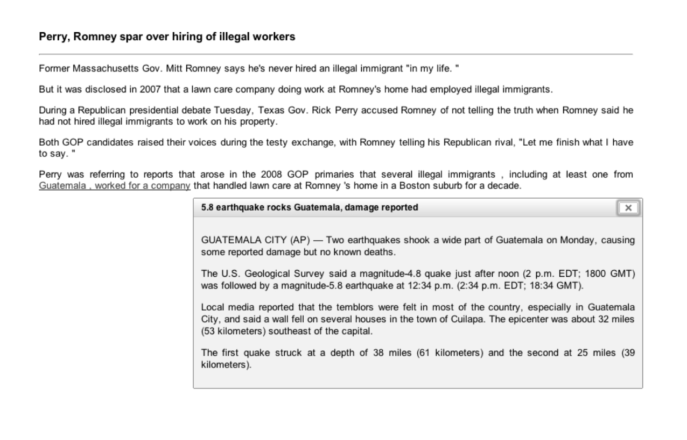

Linking entities to past articles
Automatically Embedding Newsworthy Links to Articles: From Implementation to Evaluation
I. Arapakis, M. Lalmas, H. Ceylan, and P. Donmez
Abstract - News portals are a popular destination for web users. News providers are therefore interested in attaining higher visitor rates and promoting greater engagement with their content. One aspect of engagement deals with keeping users on site longer by allowing them to have enhanced click-through experiences. News portals have invested in ways to embed links within news stories but so far these links have been curated by news editors. Given the manual effort involved, the use of such links is limited to a small scale. In this article, we evaluate a system-based approach that detects newsworthy events in a news article and locates other articles related to these events. Our system does not rely on resources like Wikipedia to identify events, and it was designed to be domain independent. A rigorous evaluation, using Amazon’s Mechanical Turk, was performed to assess the system-embedded links against the manually-curated ones. Our findings reveal that our system’s performance is comparable with that of professional editors, and that users find the automatically generated highlights interesting and the associated articles worthy of reading. Our evaluation also provides quantitative and qualitative insights into the curation of links, from the perspective of users and professional editors.
10.1002/asi.22959
PDF
User studies, text mining, qualitative research
Supplementary Material
 Example of news article with an automatically augmented link to a related article.{kind=link}
Automatically Embedding Newsworthy Links to Articles
H. Ceylan, I. Arapakis, P. Donmez, M. Lalmas
Abstract - It is of great interest to news providers such as Yahoo! News to attain higher visitor rates by promoting greater engage- ment with their content. One aspect of engagement deals with keeping users on the site longer by allowing them to navigate through content with enhanced, click-through experiences. News portals have invested in ways to provide embedded links within news stories. So far these links have been manually curated by professional editors, and due to the manual effort involved, the use of such links has been limited. In this paper we propose an automated approach to detecting and linking newsworthy events to associated articles. Our analysis, conducted on Amazon’s Mechanical Turk, reveals that our system’s performance is comparable to that of professional editors, and that users find the automatically generated highlights interesting and the associated articles worthy of reading.
10.1145/2396761.2398461
PDF
Newsworthiness; automatic linking; engagement strategy